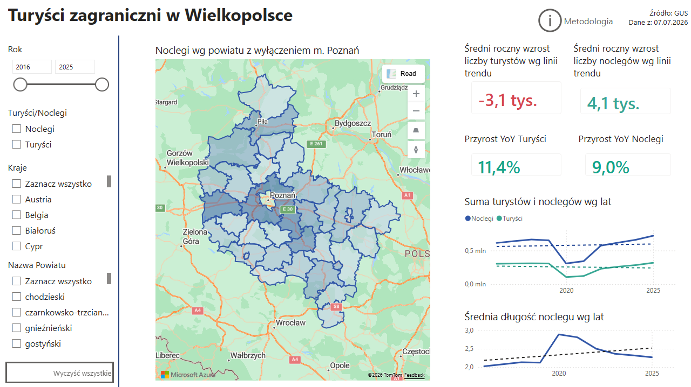

Zadanie wykonane w ramach Klubu Języka Danych, w którym realizuję co dwa miesiące zadania analizy danych. W pierwszym miesiącu wykonujemy zadanie, a w drugim wdrażamy feedback.
Zadaie lipcowe polegało na analizie zagranicznego ruchu turystycznego w Polsce.
Wykonałem dashboard eksploracyjny dla Wielkopolski przedstawiający m. in. rozkład
turystyki w powiatach, narodowości najczęściej odwiedzających czy zależności między ilością noclegów
turystów zagranicznych, a ilością miejsc noclegowych. Przygotowałem dwie karty skupiające się
na wpływie pandemii covid oraz wybuchu wojny w Ukrainie.
